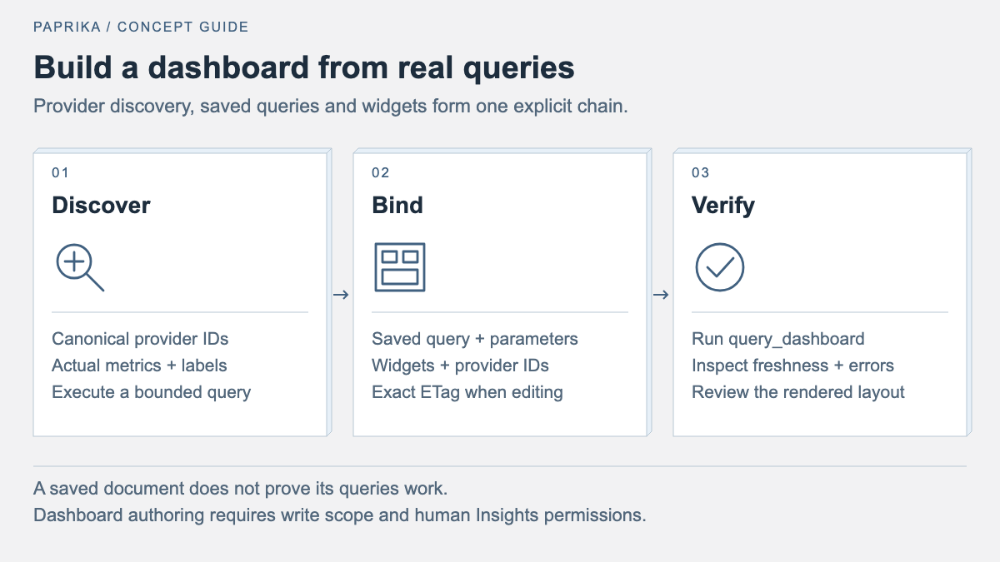

Build and verify observability dashboards through MCP
Discover real providers, create reusable queries, save dashboards with exact ETags, and verify both live data and the rendered result.
A dashboard created by an agent is useful when its queries return the right signals and its panels make those signals readable. Saving valid JSON proves neither on its own.


Paprika Observe exposes provider discovery, bounded telemetry reads and Insights document authoring through MCP. You can ask an agent to reuse real saved queries, compose a dashboard and inspect the result. The reliable sequence is to discover, query, save, read back and render. The Observe plugin guide documents the tools and permissions behind that sequence.
Connect the observability surface
Paprika's fleet MCP endpoint is /mcp; Observe uses /observe/mcp with a
separate token audience. Reading telemetry and dashboards requires
paprika:observe plus the applicable Insights and provider permissions.
Creating or changing Insights documents additionally requires explicit
paprika:insights:write consent and the user's Insights write permission.
Refreshing an existing read-only token does not add authoring access.
Complete the connection through the client's native OAuth flow. The packaged Observe plugin targets the project-hosted endpoint; a self-hosted installation needs its own verified server URL. Installation and authentication are separate steps. Provider credentials remain configured at the server; they do not belong in a dashboard or an agent prompt.
Discover real providers and measurements
Begin with list_observability_providers to inspect the available telemetry
providers. For document authoring, also call list_insights_providers and
use its returned provider IDs. Do not construct an Insights ID from a
namespace/name reference: the two APIs expose different identities.
For a new metrics query, discover the metric names, labels and metadata before
writing the expression. Query languages are provider-specific: Prometheus
uses PromQL, Loki uses LogQL, and Tempo uses TraceQL. Test a small query over
an explicit interval and inspect the actual samples. A provider reporting
OK establishes a reachability observation, not that a particular metric
exists or that a service meets its SLO. The
observability gateway guide
and Observe workflow
cover discovery and result interpretation.
A useful request to an agent is specific about the decision the dashboard should support:
Build a service overview using my existing providers and saved queries. Show request rate, error ratio and latency for a selectable service. Discover the available signals first. Keep missing data visible, and tell me if a requested measurement is unavailable.
That prompt defines an investigation. It does not assume metric names or ask the agent to fill missing measurements with plausible values.
Reuse saved queries before creating new ones
Inspect existing dashboards with list_dashboards and get_dashboard, then
use list_saved_queries and get_saved_query where needed. Reusing a known
query preserves its provider, units, parameter definitions and existing
interpretation.
Before authoring, call get_insights_schema for saved_query, widget and
dashboard. The deployed schema supplies the current fields and constraints.
Create any new saved query with create_saved_query before creating the
dashboard that references it through create_dashboard.
Bind dashboard variables explicitly to the saved query's parameters. A service selector has no effect merely because its label resembles a query parameter. For imported examples, map each placeholder to a compatible provider and review the data requirements. The dashboard examples guide describes this mapping; live query failures do not fall back to its sample fixtures.
Protect edits made by other people
Read an existing document and retain its exact ETag before updating it.
patch_dashboard supports targeted widget edits by stable ID, so a colour
or layout change need not replace the entire document. patch_saved_query
provides the corresponding query edit path.
Patch semantics matter: nested objects merge, null removes a field, and
arrays replace in full. A stale ETag means the document changed after your
read. The authoring API rejects wildcard ETags; read the document again,
resolve the conflict and submit the exact new ETag with your intended edit. See the
targeted authoring contract
for examples and immutable fields.
Execute the saved dashboard
After saving, call query_dashboard. It resolves saved queries and parameter
bindings, applies the selected interval and executes identical bound queries
once. This illustrative call uses placeholder dashboard, widget and service
identities; replace them with values discovered in your workspace:
{
"name": "query_dashboard",
"arguments": {
"id": "service-overview",
"widget_ids": ["request-rate"],
"variables": { "service": "checkout" },
"history_points": 12,
"max_series": 3
}
}
Inspect structuredContent, including widget errors, signal states,
timestamps, missing samples and truncation. Compare the number of planned
queries with those executed and deduplicated. The returned dashboard and
saved-query ETags identify the document revisions used for that observation.
The result's state: "ok" describes data availability. It is not a health
verdict. An older finite reading is still old, an empty signal is not zero
traffic, and a bounded trace sample is not a total request count. The
dashboard query contract
defines those distinctions and the available response limits.
Inspect the rendered dashboard
When the deployment advertises render_dashboard, use it after querying to
capture the actual Insights interface. The capability requires an optional
private browser worker; installing the plugin alone does not enable it.
The renderer guide
explains deployment and the revision checks attached to each capture.
Check desktop and mobile layouts, both supported themes, and a focused widget's tooltip. Look for clipped units, unreadable legends, overflowing inspectors and compact stat cards with internal scrollbars. A short KPI card usually needs a clear value and, if useful, one trend. Adding a percentage bar, a long description and a sparkline can crowd out the measurement.
Keep query verification and visual verification as separate results. If the renderer is unavailable, open the saved dashboard in the browser and inspect it there. After a targeted presentation fix, read back the document, query again and inspect the new rendering. This leaves you with both usable telemetry and a dashboard someone can comfortably read.